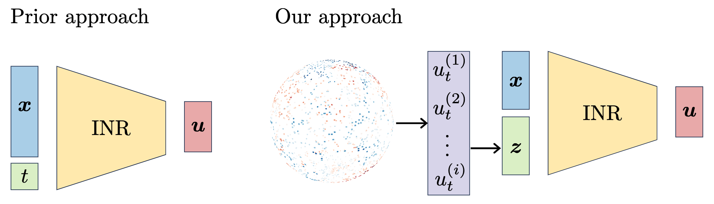
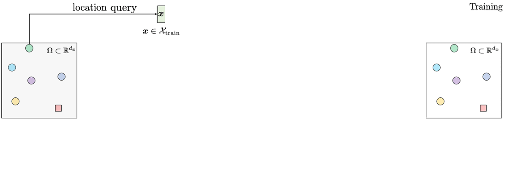
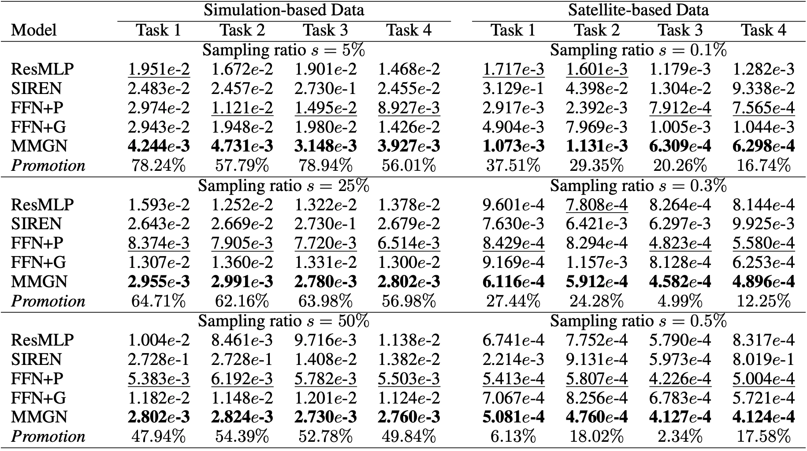
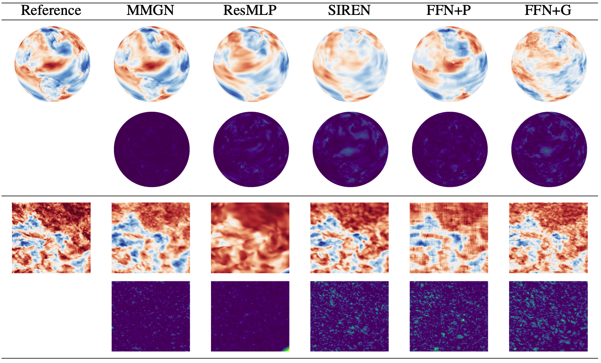

Reliably reconstructing physical fields from sparse sensor data is a challenge that frequently arises in many scientific domains. In practice, the process generating the data often is not understood to sufficient accuracy. Therefore, there is a growing interest in using the deep neural network route to address the problem. This work presents a novel approach that learns a continuous representation of the physical field using implicit neural representations (INRs). Specifically, after factorizing spatiotemporal variability into spatial and temporal components using the separation of variables technique, the method learns relevant basis functions from sparsely sampled irregular data points to develop a continuous representation of the data. In experimental evaluations, the proposed model outperforms recent INR methods, offering superior reconstruction quality on simulation data from a state-of-the-art climate model and a second dataset that comprises ultra-high resolution satellite-based sea surface temperature fields.




@inproceedings{
luo2024continuous,
title={Continuous Field Reconstruction from Sparse Observations with Implicit Neural Networks},
author={Xihaier Luo and Wei Xu and Balu Nadiga and Yihui Ren and Shinjae Yoo},
booktitle={The Twelfth International Conference on Learning Representations},
year={2024},
url={https://openreview.net/forum?id=kuTZMZdCPZ}
}